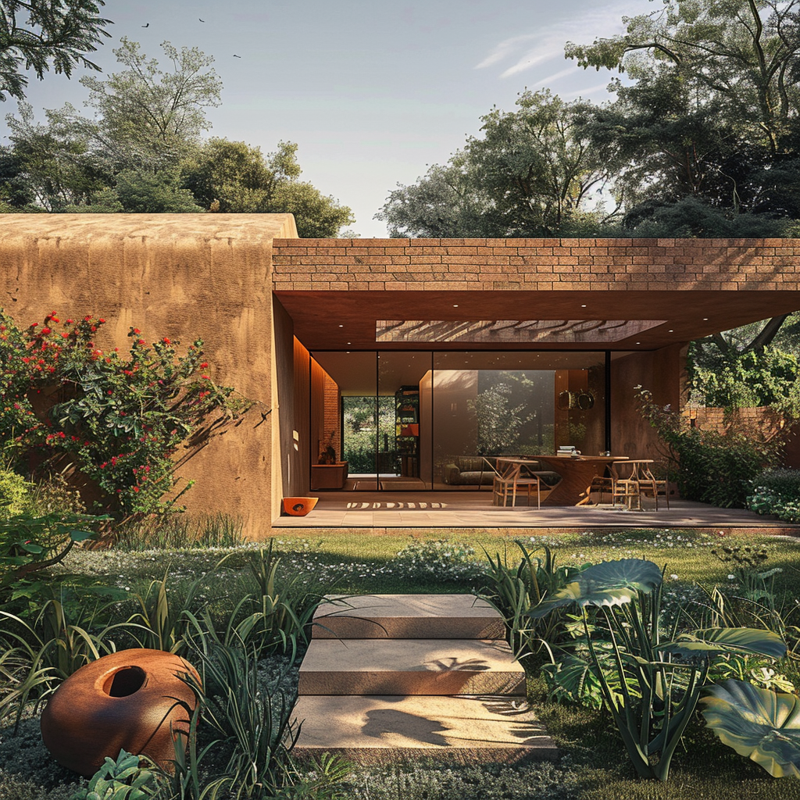

Architecture · Interiors · Construction
Studio COKA
A design studio creating thoughtful, climate-responsive buildings for hot climates. Homes, community centres and commercial spaces that stay cooler, use less energy, and feel connected to nature.
Start a project